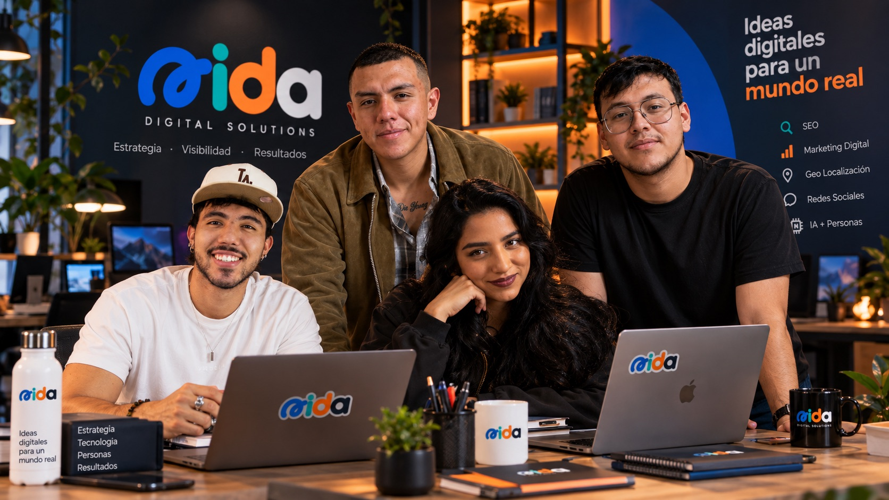
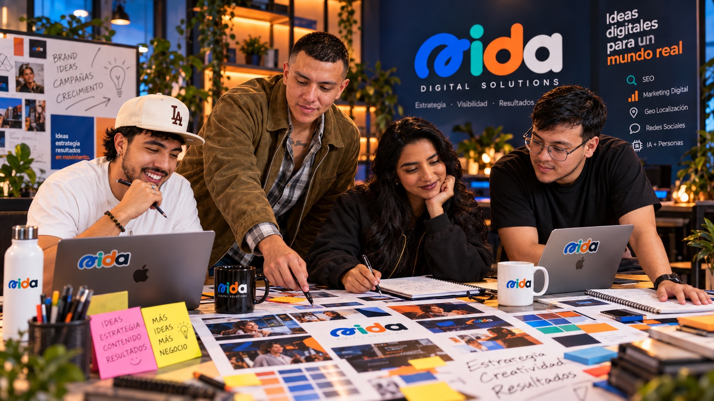
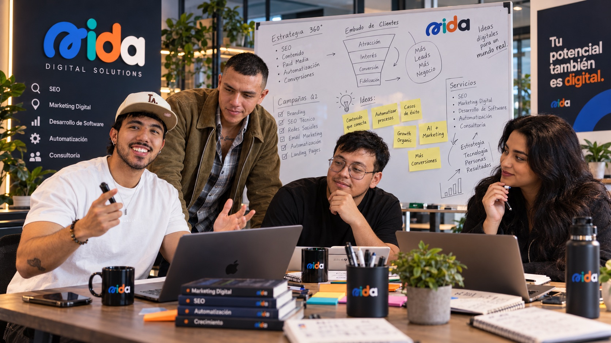
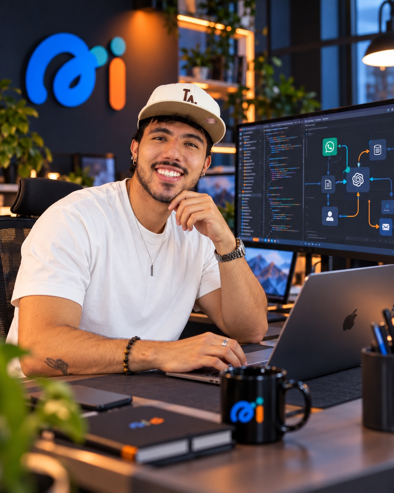

Estrategia de marca
Ordenamos la propuesta, los mensajes y el lugar que la marca necesita ocupar para que la comunicación tenga una dirección clara.
AIDA Digital Solutions
Convertimos estrategia, contenido y software en trabajo coherente para tu negocio.

AIDA trabaja donde la estrategia necesita convertirse en algo que la gente pueda ver, entender y usar.
Servicios conectados
Ordenamos la propuesta, los mensajes y el lugar que la marca necesita ocupar para que la comunicación tenga una dirección clara.

Definimos y producimos fotografía, video y piezas de marketing que explican con precisión lo que la operación necesita poner en circulación.

Revisamos los puntos de contacto y recorridos comerciales para hacer más claro el paso entre interés, conversación y seguimiento.
Diseñamos flujos y soluciones digitales que ayudan a conectar tareas, información y personas sin añadir complejidad innecesaria.
Así aterrizamos el trabajo
Partimos de lo que hoy sucede: objetivos, personas, decisiones y fricciones.
Priorizamos una respuesta conectada, con un rol definido para cada disciplina.
Llevamos el trabajo a la práctica y mantenemos la conversación cerca de la realidad.
Equipo

Contacto
Cuéntanos qué parte del trabajo necesita una respuesta más conectada.